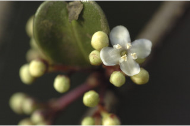
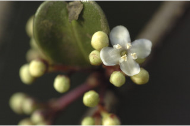
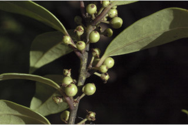
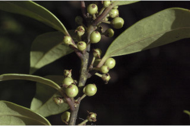

Botanical descriptions:
ಸಸ್ಯದ ವೈಜ್ಞಾನಿಕ ವಿವರ:
Botanical descriptions:
மரங்களின் பண்புகள்:
Habit:
ಪ್ರಕೃತಿ :
Habit:
வளரியல்பு:
Evergreen trees, up to 20 m tall.
30ಮೀ ಎತ್ತರದವರೆಗೆ ಬೆಳೆಯುವ ನಿತ್ಯ ಹರಿದ್ವರ್ಣ ಮರಗಳು.
20 മീറ്റര് വരെ ഉയരത്തില് വളരുന്ന നിത്യഹരിത മരങ്ങള്.
பசுமைமாறாமரம் 20 மீ. உயரம் வரை வளரக்கூடியது.
Trunk & Bark:
ಕಾಂಡ ಮತ್ತು ತೊಗಟೆ:
Trunk & Bark:
தண்டு மற்றும் மரப்பட்டை:
Bark smooth, grey, lenticellate; blaze cream.
ತೊಗಟೆ ನಯವಾದ ಮೇಲ್ಮೈ ಹಾಗೂ ಬೂದು ಬಣ್ಣ ಹೊಂದಿರುತ್ತದೆ. ಹಾಗೂ ಸೂಕ್ಷ್ಮವಾಯುವಿನಿಮಯ ರಂಧ್ರಗಳ ಸಮೇತವಿರುತ್ತವೆ. ಕಚ್ಚು ಮಾಡಿದ ಜಾಗ ಕೆನೆಯ ಬಣ್ಣದಲ್ಲಿರುತ್ತದೆ.
പുറംതൊലി മിനുസമാര്ന്നതും, ചാരനിറത്തിലുള്ളതും, ശ്വസന രന്ധ്രങ്ങളോടുകൂടിയതുമാണ്; വെട്ട്പാടിന് കീം നിറം.
மரத்தின் பட்டை வழுவழுப்பானது, சாம்பல் நிறமானது; லெண்டிசெல்லேட் (பட்டை துளைகள்); உள்பட்டை கிரீம் நிறமானது.
Branches and Branchlets:
ಕವಲುಗಳು ಮತ್ತು ಕಿರುಕೊಂಬೆಗಳು:
Branches and Branchlets:
இலைகள்:
Branchlets terete, glabrous, sometimes with purple tinge.
ಕಿರುಕೊಂಬೆಗಳು ದುಂಡಾಗಿದ್ದು, ರೋಮರಹಿತವಾಗಿರುತ್ತವೆ; ಕೆಲವು ಸಂದರ್ಭದಲ್ಲಿ ಕೆನ್ನೀಲಿ ಛಾಯೆಯನ್ನು ಹೋಂದಿರುತ್ತದೆ.
ഉപശാഖകള് ഉരുണ്ടതും, അരോമിലവും, ചിലപ്പോള് ഊതരാശിയോടു കൂടിയതുമാണ്.
இலைகள் தனித்தவை, மாற்றுஅடுக்கமானவை, சுழல் போன்று அமைந்தவை; இலைக்காம்பு 0.7 செ.மீ. நீளமானது, இலைக்காம்பு குறுக்குவெட்டுத் தோற்றத்தில் கேனாலிகுலேட்; இலை அலகு 3-6.5 X 1-3 செ.மீ, நீள்வட்ட வடிவம் சிலசமயங்களில் தலைகீழ் முட்டை வடிவம், அலகின் நுனி அதிக்கூரியது, அலகின் தளம் கூரியது, அலகின் விளிம்பு முழுமையானது, கீழ்பரப்பு உரோமங்களற்றது, கோரியேசியஸ்; மையநரம்பு அலகின் பரப்பைவிட பள்ளமானது; இரண்டாம் நிலை நரம்புகள் 6 ஜோடிகள்; மூன்றாம் நிலை நரம்புகள் தெளிவற்றது.
Leaves:
ಜಿನುಗು ದ್ರವ:
Leaves:
மஞ்சரி / மலர்கள்:
Leaves simple, alternate, spiral; petioles 0.7 cm long, canaliculate; lamina 3-6.5 x 1-3 cm, elliptic sometimes obovate, apex acuminate, base acute, margin entire, glabrous, coriaceous; midrib canaliculate; secondary_nerves 6 pairs; tertiary_nerves obscure.
ഇലകള് ലഘുവും, ഏകാന്തരക്രമത്തില് വര്ത്തുളമായി അടുക്കിയിരിക്കുന്നു; ഇലഞെട്ട് 0.7 സെ.മി നീളമുള്ളതും ചാലോട്കൂടിയതുമാണ്; പത്രഫലകത്തിന് 3മുതല് 6.5 സെ.മി വരെ നീളവും 1 മുതല് 3 സെ.മി വരെ വീതിയുള്ളതുമാണ്, ദീര്ഘവൃത്താകാരമോ ചിലപ്പോള് അപഅണ്ഡാകാരമോ ആണ്, പത്രാഗ്രം ദീര്ഘവും പത്രാധാരം നിശിതവുമാണ്, അരികുകള് അവിഭജിതമാണ്, അരോമിലം, ചര്മ്മില പ്രകൃതം; മുഖ്യസിര ചാലോട് കൂടിയതാണ്; ദ്വതീയ ഞരമ്പുകള് 6 ജോഡി; ത്രിതീയ ഞരമ്പുകള് അപ്രസക്തമാണ്.
மலர்கள் ஒர்பாலானவை, ஈரகம் கொண்டவை; ஆண்மலர்கள் வெள்ளை நிறமானது, சிறிய மஞ்சரி காம்புடைய சைம், மஞ்சரி காம்பு 0.8-1.25 செ. மீ. நீளமானது; பெண்மலர்கள் இலைக்கோணங்களில் தொகுப்பாக காணப்படுபவை.
Inflorescence / Flower:
ಎಲೆಗಳು:
Inflorescence / Flower:
கனி / விதை:
Flowers unisexual, dioecious; male flowers white, in short pedunculate cymes, peduncles 0.8-1.25 cm long; female flowers in axillary fascicles.
ಎಲೆಗಳು ಸರಳವಾಗಿದ್ದು, ಪರ್ಯಾಯ ಹಾಗೂ ಸುತ್ತು ಜೋಡನಾ ವ್ಯವಸ್ಥೆಯಲ್ಲಿದ್ದು, ಕಾಲುವೆಗೆರೆಯುಳ್ಳ 0.7 ಸೆಂ.ಮೀ. ಉದ್ದದ ತೊಟ್ಟುಗಳನ್ನು ಹೊಂದಿರುತ್ತವೆ. ಎಲೆಪತ್ರ 3 ರಿಂದ 6.5 ಸೆಂ.ಮೀ. ಉದ್ದ, 1 ರಿಂದ 3 ಸೆಂ.ಮೀ. ಅಗಲಹೊಂದಿರುತ್ತದೆ. ಅಂಡಾವೃತ್ತ ಕೆಲವು ವೇಳೆ ಬುಗುರಿಯ ಆಕಾರ ಕ್ರಮೇಣ ಚೂಪಾಗುವ ತುದಿ, ಚೂಪಾದ ಬುಡ, ನಯವಾದ ಅಂಚು, ರೋಮರಹಿತ ಹಾಗೂ ತೊಗಲನ್ನೋಲುವ ಮೇಲ್ಮೈ ಹೊಂದಿರುತ್ತದೆ. ಮಧ್ಯನಾಳ ಕಾಲುವೆಗೆರೆ ಸಮೇತವಿರುತ್ತದೆ. ಎರಡನೇ ದರ್ಜೆಯ ನಾಳಗಳು 6 ಜೋಡಿಗಳಿದ್ದು ತೃತೀಯ ದರ್ಜೆಯ ನಾಳಗಳು ಅಸ್ಪಷ್ಟವಾಗಿರುತ್ತವೆ.
പൂക്കള് ഏകലിംഗകളാണ്, ഡയീഷ്യസാണ് ആണ് പൂക്കള് വെളുത്തതും, ചെറുതണ്ടോടുകൂടിയ സൈമുകളിലുണ്ടാകുന്നു, പൂങ്കുലത്തണ്ടുകള് 0.8 മുതല് 1.25 സെ.മി വരെ നീളമുള്ളതാണ്, പെണ്പൂക്കള് കക്ഷങ്ങളില് കൂട്ടമായുണ്ടാകുന്നു.
உள்ளோட்டுத்தசைகனி (ட்ரூப்), கோளவடிவானது, சிவப்பு நிறமானது, கூரிய நுனியுடையது; அறைகள் 6, ஒவ்வொரு அறையும் 1 விதையுடையது.
Fruit and Seed:
ಪುಷ್ಪಮಂಜರಿ/ಹೂಗಳು:
Fruit and Seed:
:
Drupe, globose, red, apiculate; locule 6, each 1-seeded.
ಹೂಗಳು ಏಕಲಿಂಗಿಗಳು ಒಂದೇ ಸಸ್ಯದಲ್ಲಿ ಉಭಯಲಿಂಗದ ಪುಷ್ಪಗಳು ಇರುತ್ತವೆ. ಗಂಡುಹೂಗಳು ಶ್ವೇತವರ್ಣ ಹೊಂದಿದ್ದು ಕಿರಿದಾದ ಪುಷ್ಪವೃಂತ ಹೊಂದಿದ ಮಧ್ಯಾರಂಭಿ ಪುಷ್ಪಮಂಜರಿಯಲ್ಲಿರುತ್ತವೆ; ಪುಷ್ಪವೃಂತ 0.8 ರಿಂದ 1.25ಸೆಂ.ಮೀ. ಉದ್ದವಿರುತ್ತದೆ. ಹೆಣ್ಣು ಹೂಗಳು ಅಕ್ಷಾಕಂಕುಳಿನಲ್ಲಿನ ಗುಜ್ಜಾಕಾರದಲ್ಲಿರುತ್ತವೆ.
അറ്റത്തൊരു മുനപ്പോടുകൂടിയ, ചുവന്ന നിറത്തിലുള്ള ആഭ്രകം ഉരുണ്ടിരിക്കുന്നതാണ്; ഓരോ വിത്തുള്ള 6 അറകളുണ്ട്.
Literatures:
ಗ್ರಂಥ ಸೂಚಿ:
Literatures:
சான்று ஏடு:
Wight, Ic. Pl. Ind. Orient. t. 1216. 1848; Gamble, Fl. Madras 1: 200. 1997 (re. ed); Sasidharan, Biodiversity documentation for Kerala- Flowering Plants, part 6: 95. 2004.
Wight, Ic. Pl. Ind. Orient. t. 1216. 1848; Gamble, Fl. Madras 1: 200.1997 (re.ed); Sasidharan, Biodiversity documentation for Kerala- Flowering Plants, part 6: 95. 2004
Wight, Ic. Pl. Ind. Orient. t. 1216. 1848; Gamble, Fl. Madras 1: 200. 1997 (re. ed); Sasidharan, Biodiversity documentation for Kerala- Flowering Plants, part 6: 95. 2004.
Wight, Ic. Pl. Ind. Orient. t. 1216. 1848; Gamble, Fl. Madras 1: 200. 1997 (re. ed); Sasidharan, Biodiversity documentation for Kerala- Flowering Plants, part 6: 95. 2004.


 

 
